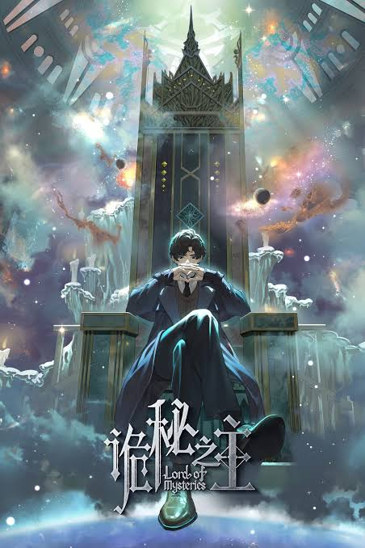

Lin Mu was a common boy living in a small town, ostracized by the townsmen because of a mistake he made during the harvest, his house seized to compensate for it.
3146 CH

LORD OF THE MYSTERIES
Zhou Mingrui awakens in the body of Klein Moretti in a Victorian world of steam and hidden magic.